import numpy as np
import pandas as pd
import seaborn.objects as so
import seaborn as sns
import statsmodels.api as sm
import plotly.express as px
# defeifdiamonds = sm.datasets.get_rdataset("diamonds", "ggplot2").data
diamonds.head()| carat | cut | color | clarity | depth | table | price | x | y | z | |
|---|---|---|---|---|---|---|---|---|---|---|
| 0 | 0.23 | Ideal | E | SI2 | 61.5 | 55.0 | 326 | 3.95 | 3.98 | 2.43 |
| 1 | 0.21 | Premium | E | SI1 | 59.8 | 61.0 | 326 | 3.89 | 3.84 | 2.31 |
| 2 | 0.23 | Good | E | VS1 | 56.9 | 65.0 | 327 | 4.05 | 4.07 | 2.31 |
| 3 | 0.29 | Premium | I | VS2 | 62.4 | 58.0 | 334 | 4.20 | 4.23 | 2.63 |
| 4 | 0.31 | Good | J | SI2 | 63.3 | 58.0 | 335 | 4.34 | 4.35 | 2.75 |
flights = sm.datasets.get_rdataset("flights", "nycflights13").data
flights.head()| year | month | day | dep_time | sched_dep_time | dep_delay | arr_time | sched_arr_time | arr_delay | carrier | flight | tailnum | origin | dest | air_time | distance | hour | minute | time_hour | |
|---|---|---|---|---|---|---|---|---|---|---|---|---|---|---|---|---|---|---|---|
| 0 | 2013 | 1 | 1 | 517.0 | 515 | 2.0 | 830.0 | 819 | 11.0 | UA | 1545 | N14228 | EWR | IAH | 227.0 | 1400 | 5 | 15 | 2013-01-01 05:00:00 |
| 1 | 2013 | 1 | 1 | 533.0 | 529 | 4.0 | 850.0 | 830 | 20.0 | UA | 1714 | N24211 | LGA | IAH | 227.0 | 1416 | 5 | 29 | 2013-01-01 05:00:00 |
| 2 | 2013 | 1 | 1 | 542.0 | 540 | 2.0 | 923.0 | 850 | 33.0 | AA | 1141 | N619AA | JFK | MIA | 160.0 | 1089 | 5 | 40 | 2013-01-01 05:00:00 |
| 3 | 2013 | 1 | 1 | 544.0 | 545 | -1.0 | 1004.0 | 1022 | -18.0 | B6 | 725 | N804JB | JFK | BQN | 183.0 | 1576 | 5 | 45 | 2013-01-01 05:00:00 |
| 4 | 2013 | 1 | 1 | 554.0 | 600 | -6.0 | 812.0 | 837 | -25.0 | DL | 461 | N668DN | LGA | ATL | 116.0 | 762 | 6 | 0 | 2013-01-01 06:00:00 |
mpg = sm.datasets.get_rdataset("mpg", "ggplot2").data
mpg.head()| manufacturer | model | displ | year | cyl | trans | drv | cty | hwy | fl | class | |
|---|---|---|---|---|---|---|---|---|---|---|---|
| 0 | audi | a4 | 1.8 | 1999 | 4 | auto(l5) | f | 18 | 29 | p | compact |
| 1 | audi | a4 | 1.8 | 1999 | 4 | manual(m5) | f | 21 | 29 | p | compact |
| 2 | audi | a4 | 2.0 | 2008 | 4 | manual(m6) | f | 20 | 31 | p | compact |
| 3 | audi | a4 | 2.0 | 2008 | 4 | auto(av) | f | 21 | 30 | p | compact |
| 4 | audi | a4 | 2.8 | 1999 | 6 | auto(l5) | f | 16 | 26 | p | compact |
penguins = sns.load_dataset("penguins")
penguins.head()| species | island | bill_length_mm | bill_depth_mm | flipper_length_mm | body_mass_g | sex | |
|---|---|---|---|---|---|---|---|
| 0 | Adelie | Torgersen | 39.1 | 18.7 | 181.0 | 3750.0 | Male |
| 1 | Adelie | Torgersen | 39.5 | 17.4 | 186.0 | 3800.0 | Female |
| 2 | Adelie | Torgersen | 40.3 | 18.0 | 195.0 | 3250.0 | Female |
| 3 | Adelie | Torgersen | NaN | NaN | NaN | NaN | NaN |
| 4 | Adelie | Torgersen | 36.7 | 19.3 | 193.0 | 3450.0 | Female |
tips = sns.load_dataset("tips")
tips.head()| total_bill | tip | sex | smoker | day | time | size | |
|---|---|---|---|---|---|---|---|
| 0 | 16.99 | 1.01 | Female | No | Sun | Dinner | 2 |
| 1 | 10.34 | 1.66 | Male | No | Sun | Dinner | 3 |
| 2 | 21.01 | 3.50 | Male | No | Sun | Dinner | 3 |
| 3 | 23.68 | 3.31 | Male | No | Sun | Dinner | 2 |
| 4 | 24.59 | 3.61 | Female | No | Sun | Dinner | 4 |
healthexp = sns.load_dataset("healthexp")
healthexp.head()| Year | Country | Spending_USD | Life_Expectancy | |
|---|---|---|---|---|
| 0 | 1970 | Germany | 252.311 | 70.6 |
| 1 | 1970 | France | 192.143 | 72.2 |
| 2 | 1970 | Great Britain | 123.993 | 71.9 |
| 3 | 1970 | Japan | 150.437 | 72.0 |
| 4 | 1970 | USA | 326.961 | 70.9 |
(
so.Plot(tips, x="total_bill", y="tip", color="time")
.add(so.Dots())
.add(so.Line(), so.PolyFit())
.add(so.Line(), so.PolyFit(1))
)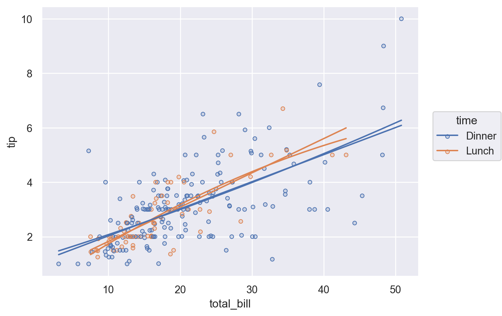
sns.lmplot(data=tips, x="total_bill", y="tip", hue="time", lowess=True, col="sex", height=5, aspect=2/3, scatter_kws={"alpha":.8, "s":5})<seaborn.axisgrid.FacetGrid at 0x158621e90>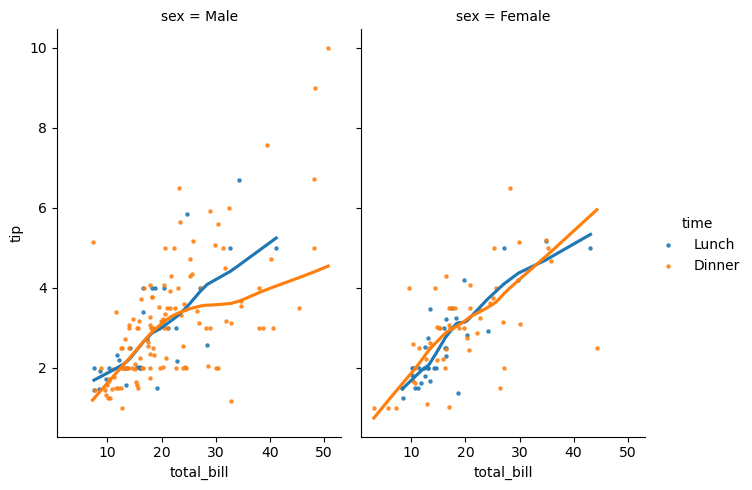
# https://plotly.com/python/linear-fits/
px.scatter(tips, x="total_bill", y="tip", color="time", trendline="lowess",
trendline_options=dict(frac=3/10)) # default: 2/3Unable to display output for mime type(s): application/vnd.plotly.v1+jsong = sns.catplot(data=tips, x="day", y="total_bill", kind="violin", inner=None)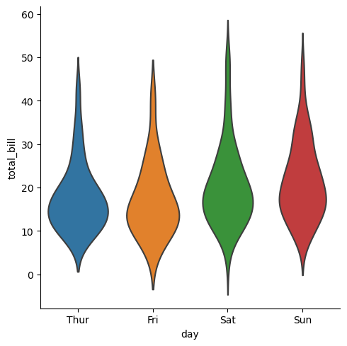
sns.swarmplot(data=tips, x="day", y="total_bill", color="k", size=3, ax=g.ax)<AxesSubplot: xlabel='day', ylabel='total_bill'>penguins = sns.load_dataset("penguins")
sns.set_palette("Set3")
sns.lmplot(data=penguins, x="bill_length_mm", y="bill_depth_mm", hue="species", lowess=True, col="sex", height=3, scatter_kws={"alpha":.5, "s":5})<seaborn.axisgrid.FacetGrid at 0x16583df50>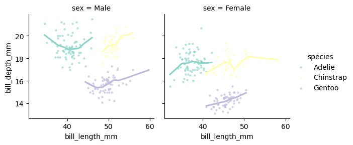
(
so.Plot(x=penguins["bill_length_mm"], y=penguins["bill_depth_mm"])
.add(so.Dots(), color=penguins["species"])
.add(so.Line(), so.PolyFit())
.add(so.Line(), so.PolyFit(1))
)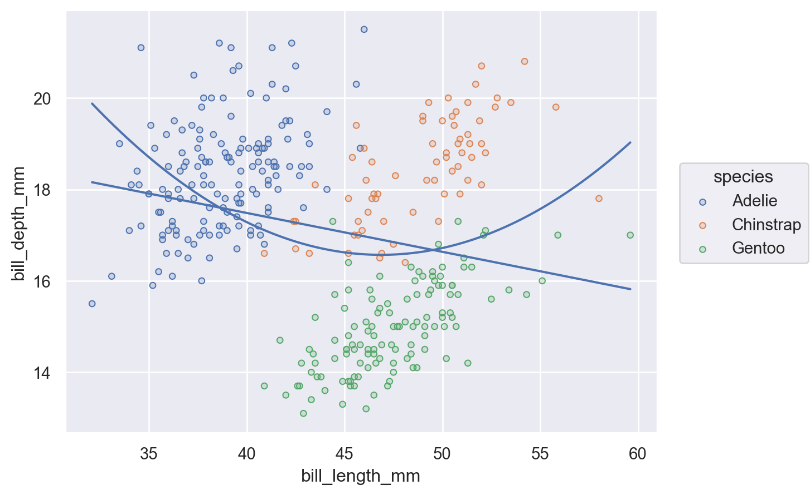
(
so.Plot(penguins, x="bill_length_mm", y="bill_depth_mm", color="species")
.add(so.Dots())
.add(so.Line(), so.PolyFit())
.facet(col="sex")
)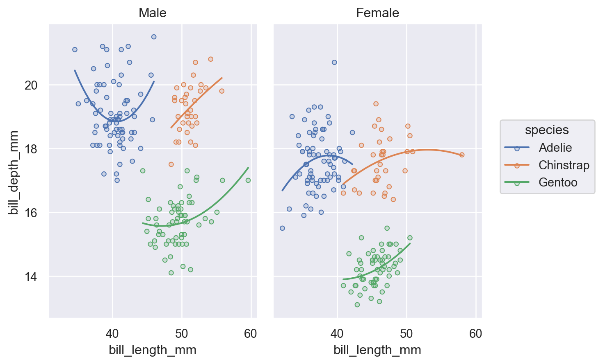
(
so.Plot(penguins, x="bill_length_mm", y="bill_depth_mm", color="species")
.add(so.Dots())
.add(so.Line(), so.PolyFit())
.facet(col="sex")
)
px.scatter(penguins.query('~@pd.isna(sex)'), x="bill_length_mm", y="bill_depth_mm", color="species", opacity=.3,
facet_col="sex", trendline="lowess")Unable to display output for mime type(s): application/vnd.plotly.v1+jsonpx.scatter(penguins.dropna(subset="sex"), x="bill_length_mm", y="bill_depth_mm", color="species",
facet_col="sex", trendline="lowess")Unable to display output for mime type(s): application/vnd.plotly.v1+jsonpenguins| species | island | bill_length_mm | bill_depth_mm | flipper_length_mm | body_mass_g | sex | |
|---|---|---|---|---|---|---|---|
| 0 | Adelie | Torgersen | 39.1 | 18.7 | 181.0 | 3750.0 | Male |
| 1 | Adelie | Torgersen | 39.5 | 17.4 | 186.0 | 3800.0 | Female |
| 2 | Adelie | Torgersen | 40.3 | 18.0 | 195.0 | 3250.0 | Female |
| 3 | Adelie | Torgersen | NaN | NaN | NaN | NaN | NaN |
| 4 | Adelie | Torgersen | 36.7 | 19.3 | 193.0 | 3450.0 | Female |
| ... | ... | ... | ... | ... | ... | ... | ... |
| 339 | Gentoo | Biscoe | NaN | NaN | NaN | NaN | NaN |
| 340 | Gentoo | Biscoe | 46.8 | 14.3 | 215.0 | 4850.0 | Female |
| 341 | Gentoo | Biscoe | 50.4 | 15.7 | 222.0 | 5750.0 | Male |
| 342 | Gentoo | Biscoe | 45.2 | 14.8 | 212.0 | 5200.0 | Female |
| 343 | Gentoo | Biscoe | 49.9 | 16.1 | 213.0 | 5400.0 | Male |
344 rows × 7 columns
(
so.Plot(penguins, x="bill_length_mm", color="species")
#.add(so.Dots(), so.Hist())
.add(so.Line(marker="."), so.Hist(binwidth=2))
#.add(so.Line(), so.PolyFit())
.facet(col="sex")
)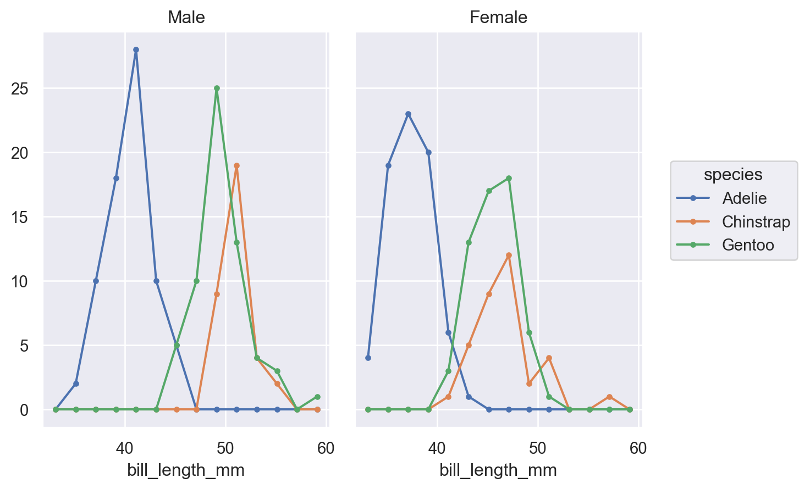
(
so.Plot(penguins, x="bill_length_mm", color="species")
.add(so.Area(), so.Hist(binwidth=2))
.facet(col="sex")
)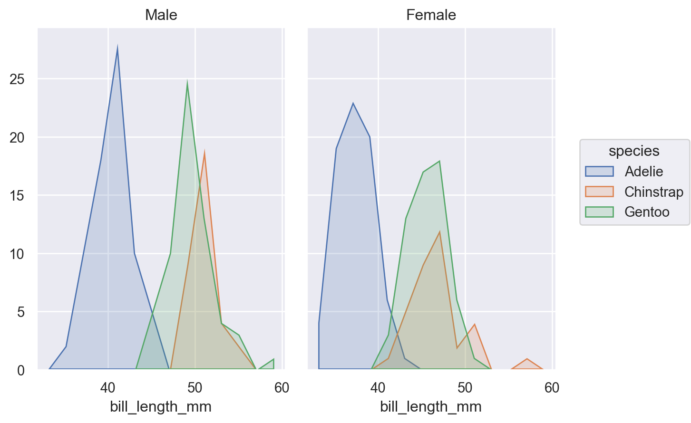
(
so.Plot(penguins, x="flipper_length_mm")
.add(so.Bars(), so.Hist(binwidth=10))
)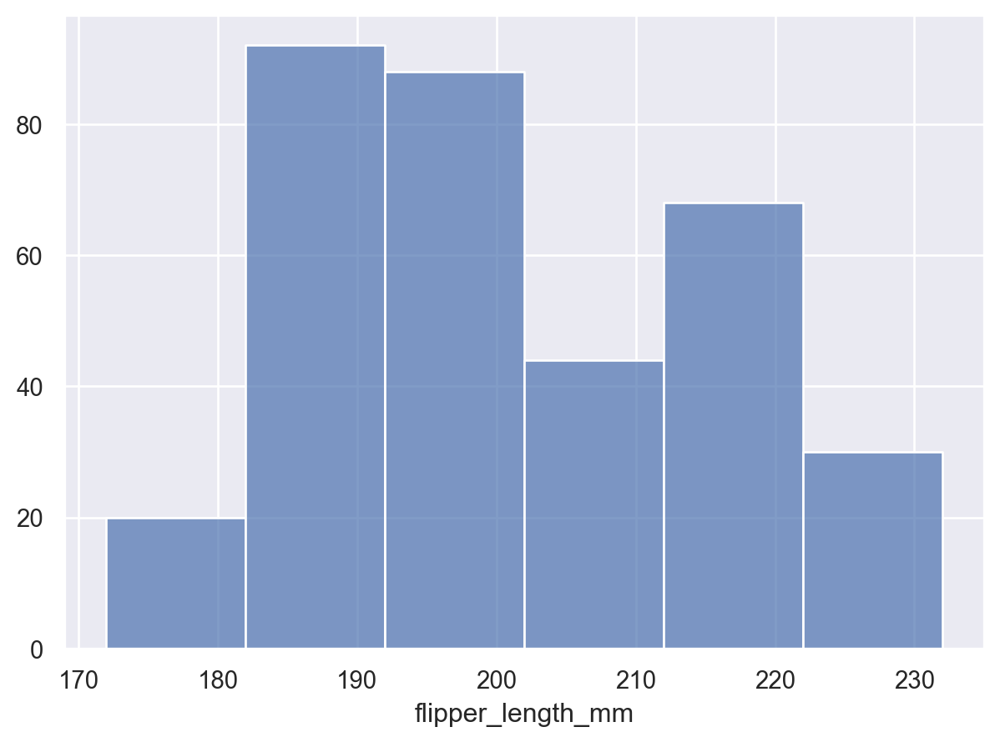
(
so.Plot(penguins, x="species")
.add(so.Bar(), so.Count())
)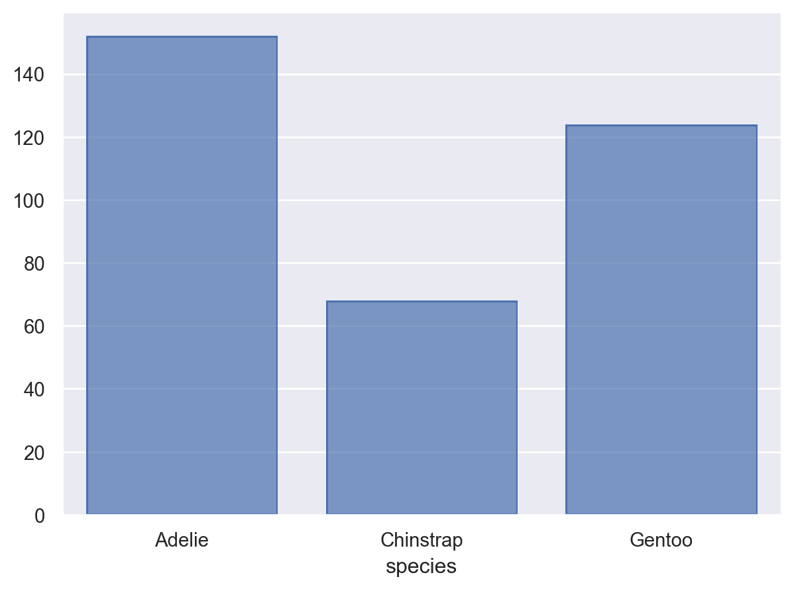
healthexp = sns.load_dataset("healthexp")
p = so.Plot(healthexp, "Spending_USD", "Life_Expectancy", color="Country")
p.add(so.Path())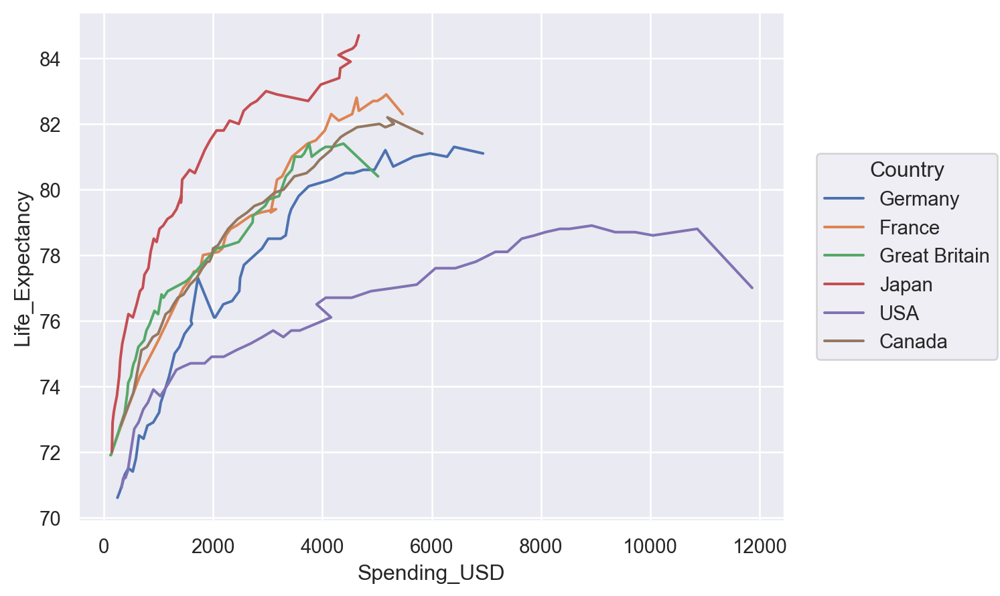
healthexp = sns.load_dataset("healthexp")
p = so.Plot(healthexp, "Spending_USD", "Life_Expectancy", color="Country")
p.add(so.Line())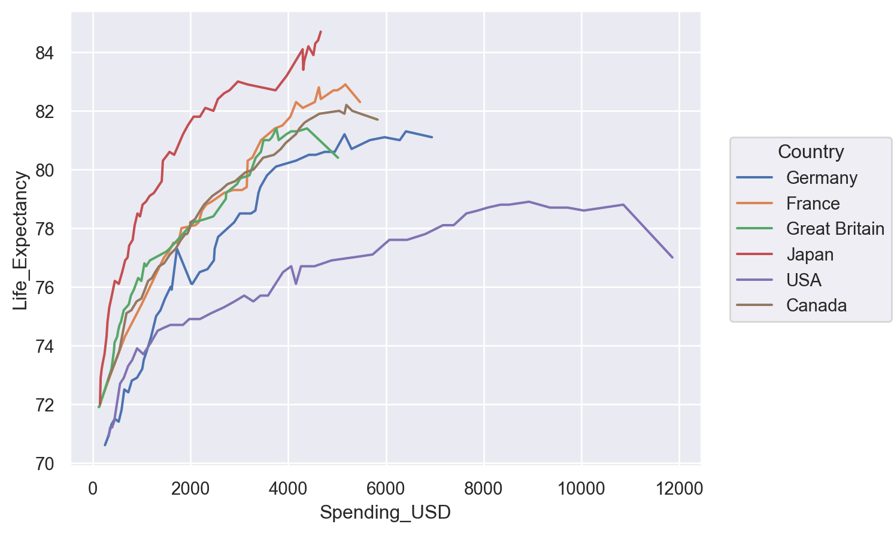
healthexp = sns.load_dataset("healthexp")
p = so.Plot(healthexp, "Spending_USD", "Life_Expectancy")
hline = pd.DataFrame({"x": [0, 12000], "y": [80, 80]})
(
p.add(so.Line(), color="Country")
.add(so.Line(linestyle=":", color="red"), x=hline.x, y=hline.y)
)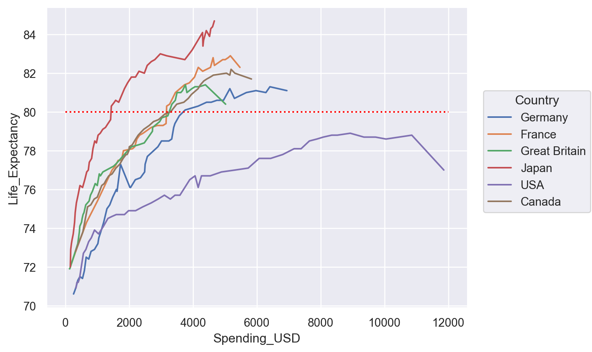
import plotly.express as px
df = px.data.tips()
px.scatter(df, x="total_bill", y="tip", color="day",
facet_col="day", facet_col_wrap=2, trendline="lowess")Unable to display output for mime type(s): application/vnd.plotly.v1+jsonsns.jointplot(tips, x="total_bill", y="tip", kind="hex")<seaborn.axisgrid.JointGrid at 0x16530f310>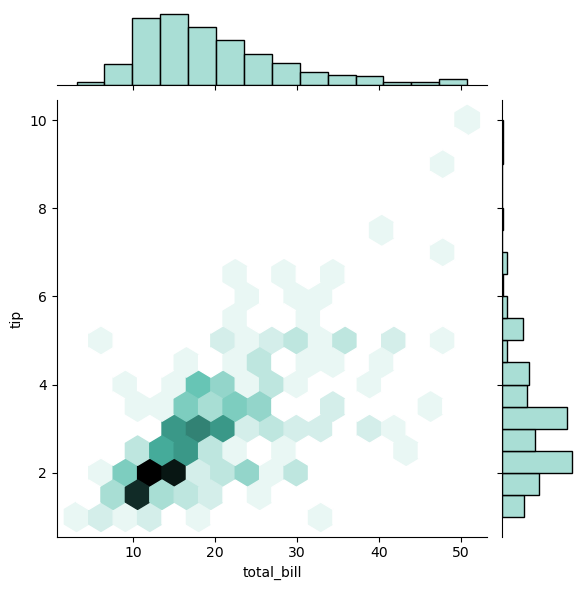
sns.histplot(penguins, x="bill_depth_mm", y="body_mass_g", hue="species")<AxesSubplot: xlabel='bill_depth_mm', ylabel='body_mass_g'>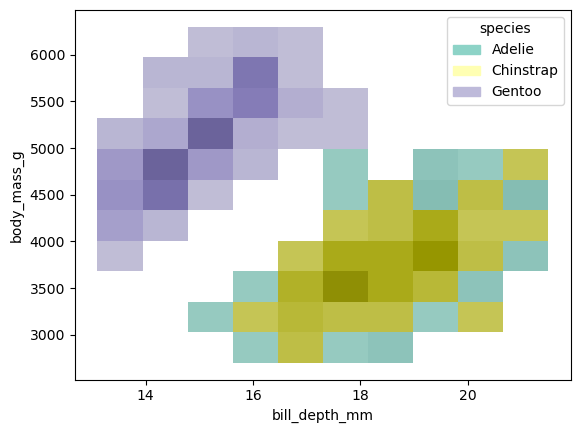
diamonds = sns.load_dataset("diamonds")
diamonds.head()| carat | cut | color | clarity | depth | table | price | x | y | z | |
|---|---|---|---|---|---|---|---|---|---|---|
| 0 | 0.23 | Ideal | E | SI2 | 61.5 | 55.0 | 326 | 3.95 | 3.98 | 2.43 |
| 1 | 0.21 | Premium | E | SI1 | 59.8 | 61.0 | 326 | 3.89 | 3.84 | 2.31 |
| 2 | 0.23 | Good | E | VS1 | 56.9 | 65.0 | 327 | 4.05 | 4.07 | 2.31 |
| 3 | 0.29 | Premium | I | VS2 | 62.4 | 58.0 | 334 | 4.20 | 4.23 | 2.63 |
| 4 | 0.31 | Good | J | SI2 | 63.3 | 58.0 | 335 | 4.34 | 4.35 | 2.75 |
sns.histplot(diamonds, x="carat", y="price", bins=20)<AxesSubplot: xlabel='carat', ylabel='price'>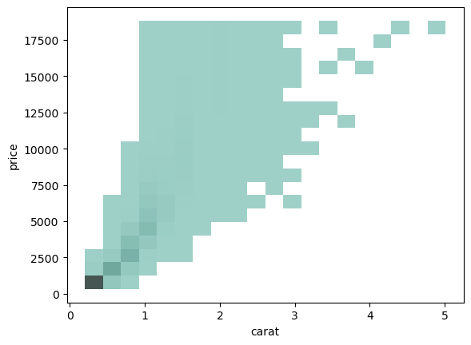
g = sns.relplot(diamonds, x="carat", y="price", kind="scatter", color="red")
sns.histplot(diamonds, x="carat", y="price", bins=20, ax=g.ax, alpha=.5)<AxesSubplot: xlabel='carat', ylabel='price'>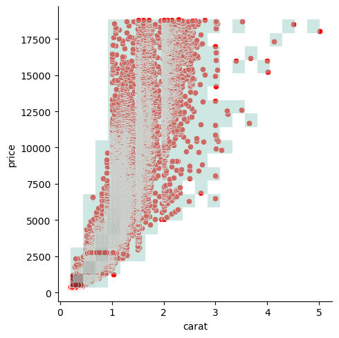
penguins.groupby(["sex", "species"]).size()sex species
Female Adelie 73
Chinstrap 34
Gentoo 58
Male Adelie 73
Chinstrap 34
Gentoo 61
dtype: int64df = penguins[["sex", "species"]].value_counts(sort=False).reset_index(name="n")
df["prop"] = df["n"] / df.groupby("sex")["n"].transform("sum")
(
so.Plot(df, x="species", y="prop", color="species")
.add(so.Bar())
.facet("sex")
.scale(
y=so.Continuous().label(like="{x:.1%}"),
color="Set1"
)
)
# .scale(
# x=so.Continuous(trans="sqrt").tick(every=.5),
# y=so.Continuous().label(like="${x:,.1%}"),
# color=so.Continuous("ch:.2").tick(upto=4).label(unit="m"),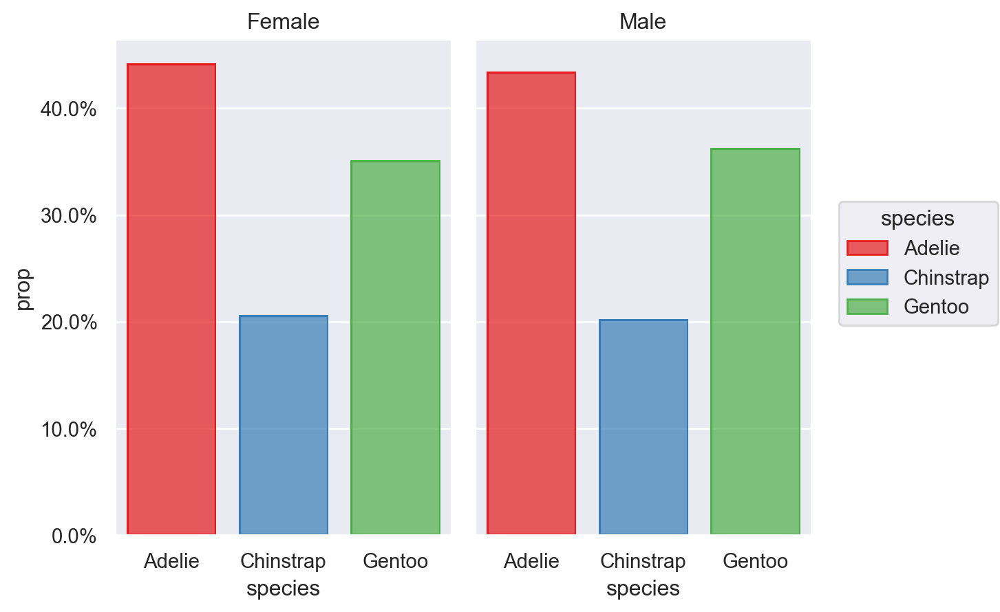
(
so.Plot(data=penguins, x="species", color="island")
.add(so.Bars(width=.8), so.Hist(stat="proportion", common_norm=["x"]), so.Stack())
)/Users/georgeair/miniconda3/envs/envconda/lib/python3.11/site-packages/seaborn/_stats/counting.py:228: UserWarning:
Undefined variable(s) passed for Hist.common_norm: 'x'.
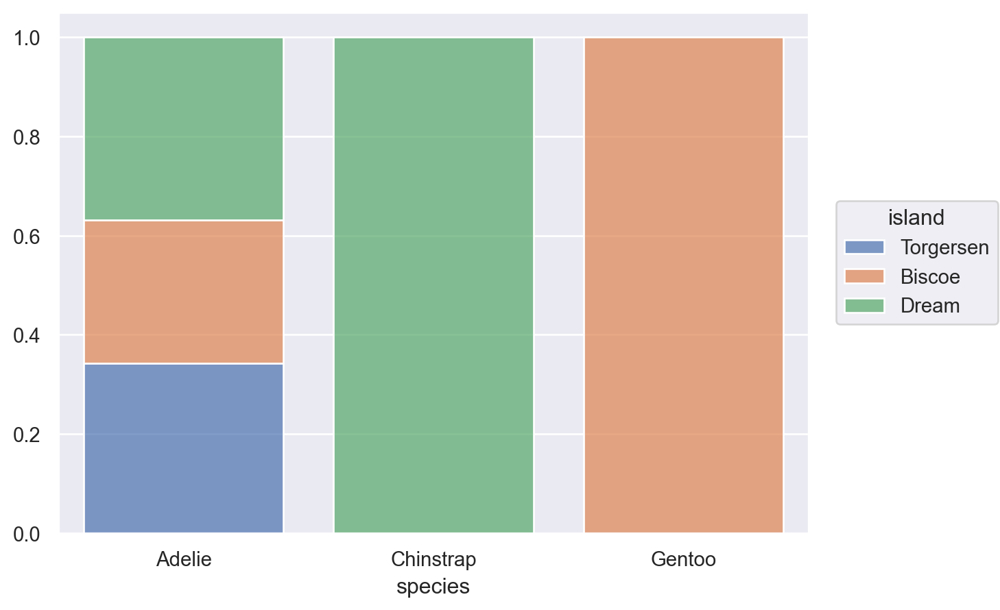
tips.head()| total_bill | tip | sex | smoker | day | time | size | |
|---|---|---|---|---|---|---|---|
| 0 | 16.99 | 1.01 | Female | No | Sun | Dinner | 2 |
| 1 | 10.34 | 1.66 | Male | No | Sun | Dinner | 3 |
| 2 | 21.01 | 3.50 | Male | No | Sun | Dinner | 3 |
| 3 | 23.68 | 3.31 | Male | No | Sun | Dinner | 2 |
| 4 | 24.59 | 3.61 | Female | No | Sun | Dinner | 4 |
(
so.Plot(data=tips, x="day", color="smoker")
.add(so.Bars(width=.8), so.Hist(stat="proportion", common_norm=["x"]), so.Stack())
)/Users/georgeair/miniconda3/envs/envconda/lib/python3.11/site-packages/seaborn/_stats/counting.py:228: UserWarning:
Undefined variable(s) passed for Hist.common_norm: 'x'.
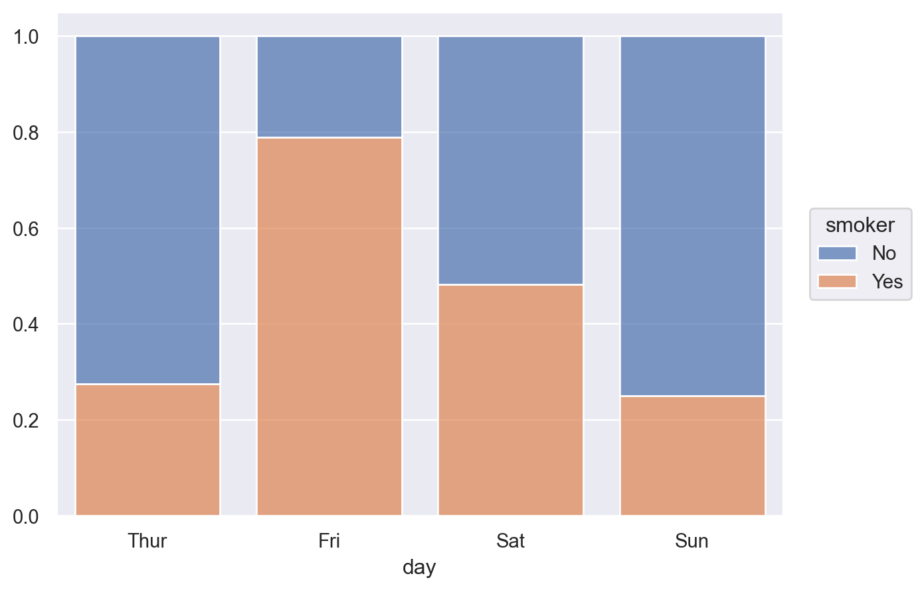
(
so.Plot(data=tips, x="day", color="smoker")
.add(so.Bars(width=.8), so.Hist(stat="proportion", common_norm=["col", "x"]), so.Stack())
.facet("sex")
.label(col="Sex:")
)/Users/georgeair/miniconda3/envs/envconda/lib/python3.11/site-packages/seaborn/_stats/counting.py:228: UserWarning:
Undefined variable(s) passed for Hist.common_norm: 'x'.
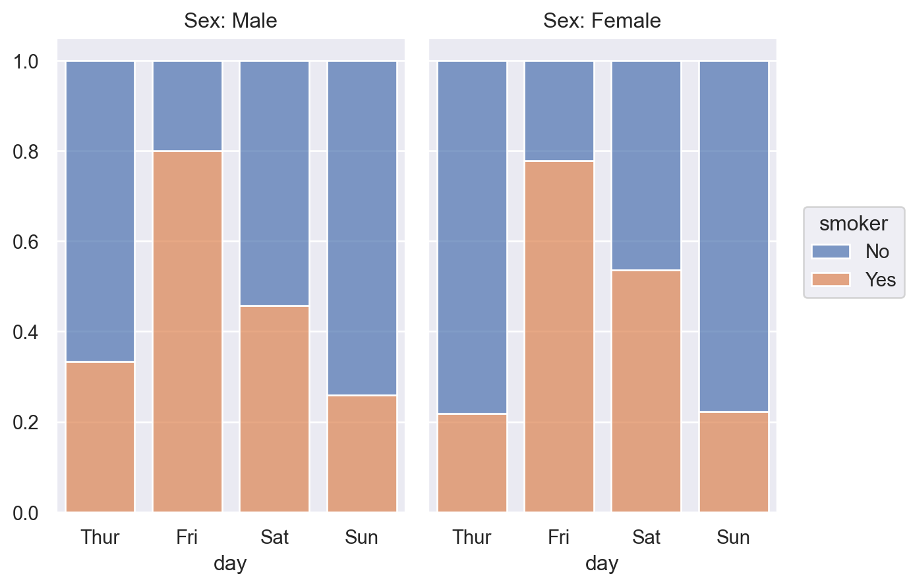
p = so.Plot(penguins, "flipper_length_mm")
p = p.facet("island")
p.add(so.Bars(width=.8, ), so.Hist(stat="proportion", common_norm=["col"]), so.Dodge(), color="sex")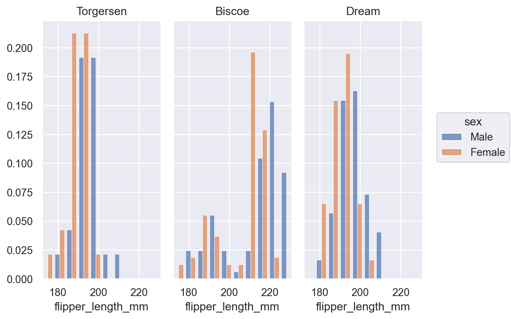
p.add(so.Bars(), so.Hist(stat="proportion", common_norm=["sex"]), color="sex")/Users/georgeair/miniconda3/envs/envconda/lib/python3.11/site-packages/seaborn/_stats/counting.py:228: UserWarning:
Undefined variable(s) passed for Hist.common_norm: 'sex'.
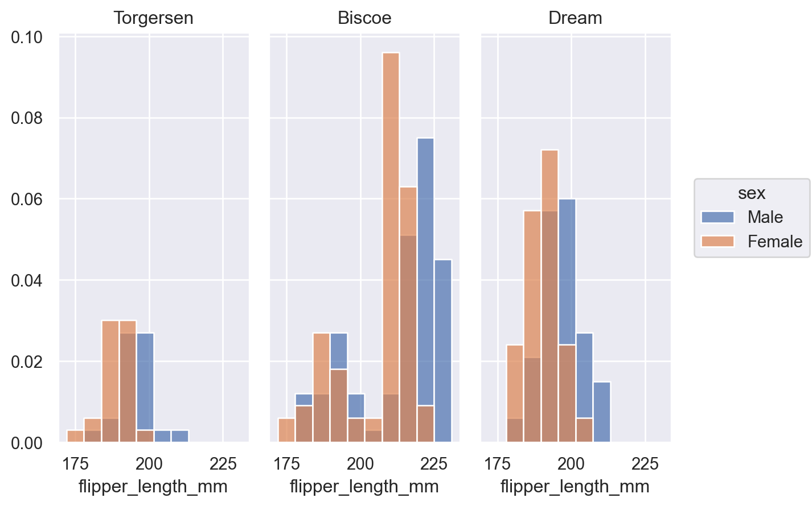
p = (
so.Plot(penguins, x="bill_length_mm", y="bill_depth_mm")
.facet(col="species", row="sex")
.add(so.Dots())
)
p.share(x=False, y=True)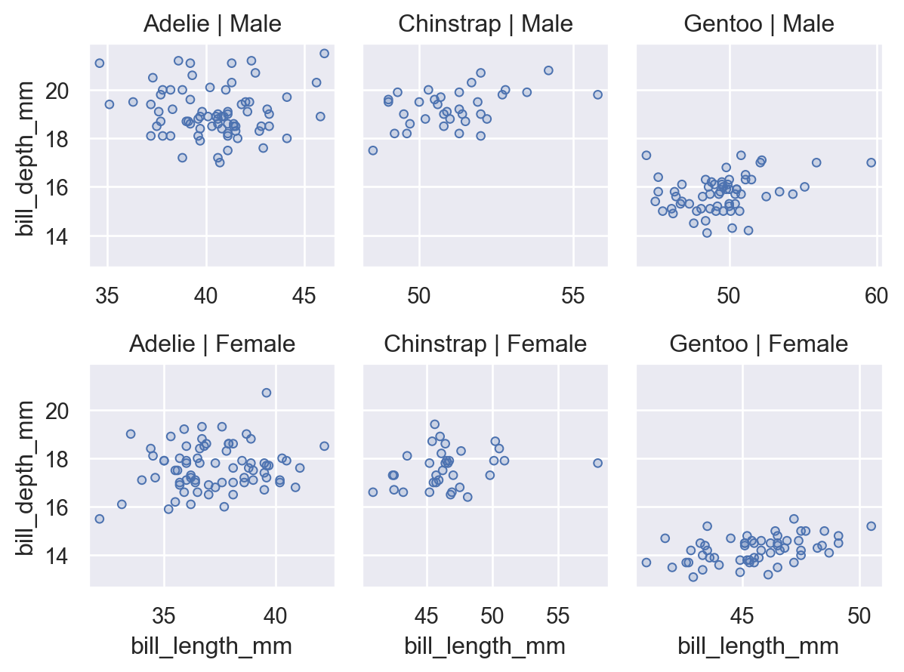
(
so.Plot(penguins, y="flipper_length_mm")
.pair(x=["bill_length_mm", "bill_depth_mm"])
.add(so.Dots())
.share(x=True)
)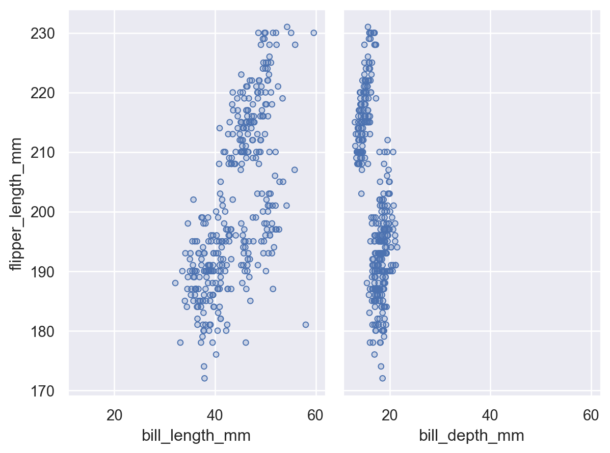
import matplotlib.pyplot as plt
import matplotlib as mpl
p = so.Plot(diamonds, "carat", "price").add(so.Dots())
q = so.Plot(diamonds, "carat", "price").add(so.Line(), so.PolyFit())
f = mpl.figure.Figure(figsize=(7, 4))
sf1, sf2 = f.subfigures(1, 2)
p.on(sf1).plot()
q.on(sf2).plot()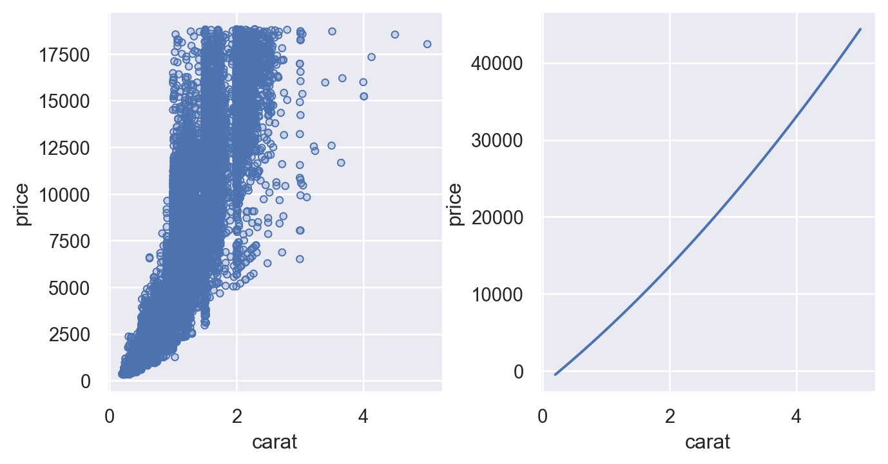
(
so.Plot(tips, x="total_bill", y="size", color="time")
.add(so.Dot(alpha=.5), so.Jitter(.4), orient="y")
)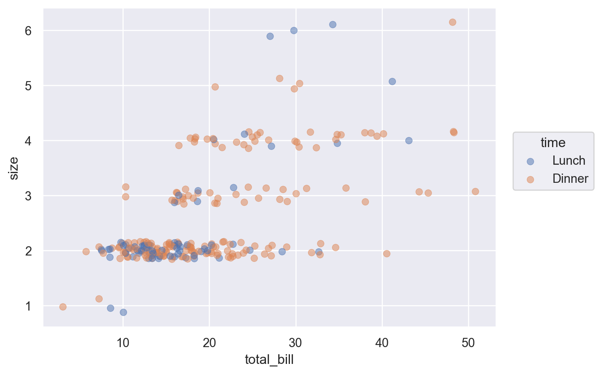
g = sns.FacetGrid(tips, col="time", row="sex")
g.map_dataframe(sns.histplot, x="total_bill")<seaborn.axisgrid.FacetGrid at 0x16336a550>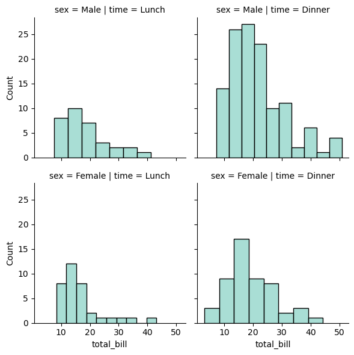
g = sns.FacetGrid(tips, col="time")
g.map_dataframe(sns.boxplot, x="day", y="total_bill", hue="day")<seaborn.axisgrid.FacetGrid at 0x284013690>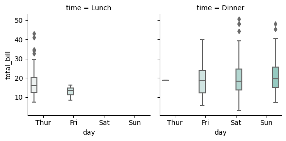
g = sns.FacetGrid(tips, col="time", margin_titles=True)
g.map_dataframe(sns.scatterplot, x="total_bill", y="tip")
g.refline(y=tips["tip"].median())<seaborn.axisgrid.FacetGrid at 0x28450b8d0>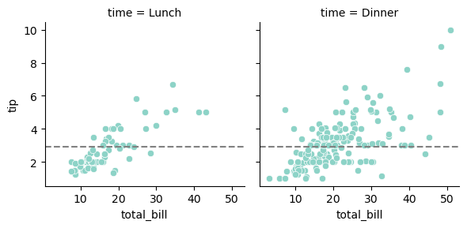
px.box(tips, x="day", y="total_bill",
color="day", points="all", facet_col="time",
category_orders={"day": tips.day.values.categories.values})Unable to display output for mime type(s): application/vnd.plotly.v1+json# https://plotly.com/python/axes/
(
px.scatter(tips, x="total_bill", y="tip", color="day",
facet_col="day", facet_col_wrap=2, trendline="ols")
.update_yaxes(scaleanchor = "x", scaleratio = 3)
#.update_xaxes(range=[10, 40], constrain="domain")
.update_xaxes(range=[10, 40])
.add_hline(y=5, fillcolor="white")
.update_layout(width=800, height=500)
)Unable to display output for mime type(s): application/vnd.plotly.v1+json# https://plotly.com/python/axes/
(
px.scatter(tips, x="total_bill", y="tip", color="day",
facet_col="day", facet_col_wrap=2, trendline="ols")
.update_yaxes(scaleanchor = "x", scaleratio = 3)
.update_xaxes(range=[10, 40], constrain="domain")
#.update_xaxes(range=[10, 40])
.add_hline(y=2, line_color="white", line_width=3, line_dash="dash")
.update_layout(width=800, height=500)
)Unable to display output for mime type(s): application/vnd.plotly.v1+json#https://plotly.com/python/creating-and-updating-figures/
from plotly.subplots import make_subplots
fig = make_subplots(rows=1, cols=1)
fig.add_scatter(y=[4, 2, 1], mode="lines", row=1, col=1)
fig.add_bar(y=[2, 1, 3], row=1, col=1)
fig.show()Unable to display output for mime type(s): application/vnd.plotly.v1+json# https://seaborn.pydata.org/generated/seaborn.objects.Plot.scale.html
(
so.Plot(mpg, x="cyl")
.add(so.Bar(), so.Hist())
.scale(x=so.Nominal())
.label(x="cylinder", y="count",
title="the number of cars by cylinder")
)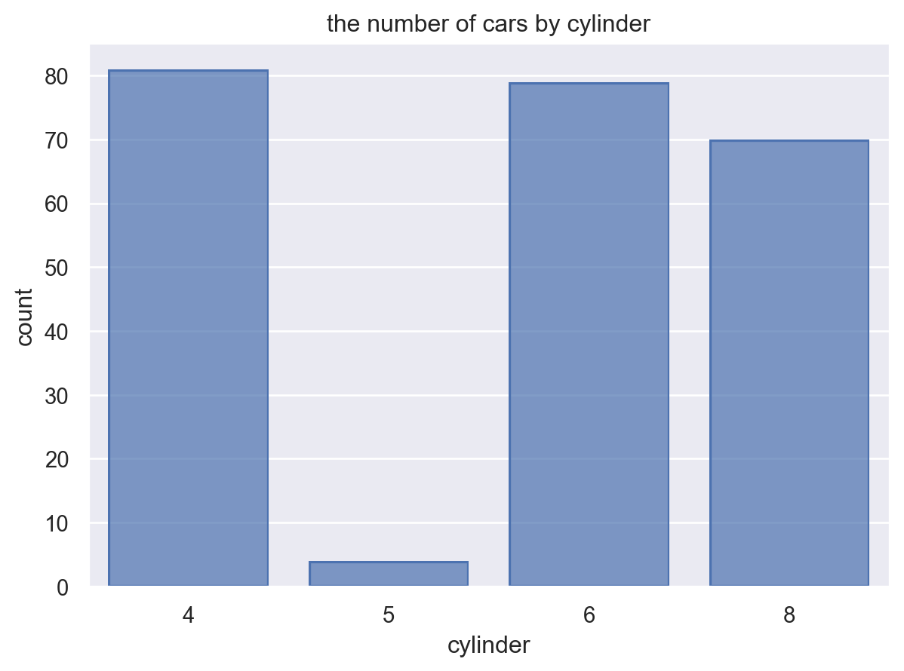
import matplotlib.pyplot as plt
sns.set(style="darkgrid")
df = sns.load_dataset('iris')
# Usual boxplot
ax = sns.boxplot(x='species', y='sepal_length', data=df)
# Add jitter with the swarmplot function
ax = sns.swarmplot(x='species', y='sepal_length', data=df, color="grey")
plt.show()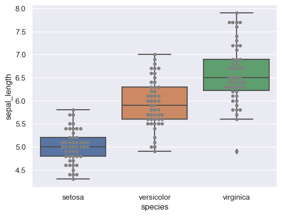
ax = sns.stripplot(data=tips, x="day", y="total_bill", alpha=.5)
ax = sns.boxplot(data=tips, x="day", y="total_bill")
ax = sns.violinplot(data=tips, x="day", y="total_bill")
plt.show()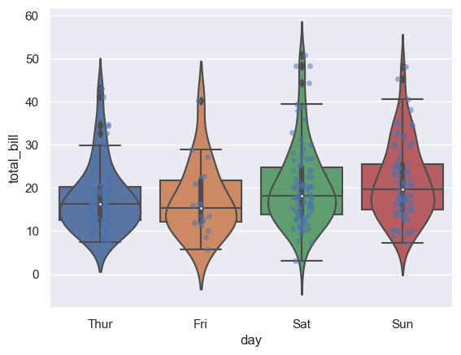
sns.pairplot(penguins, hue="species", kind="reg",
markers=[".", ".", "."])<seaborn.axisgrid.PairGrid at 0x163058810>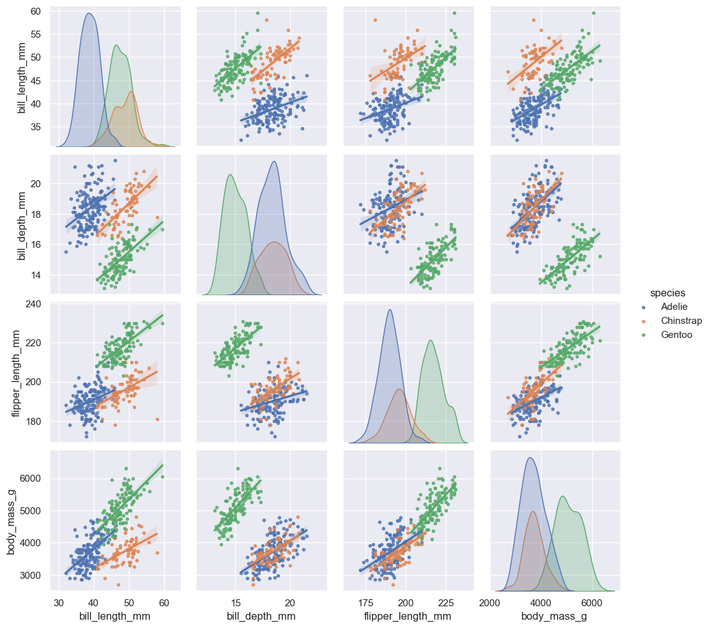
cor_mat.head()| bill_length_mm | bill_depth_mm | flipper_length_mm | body_mass_g | |
|---|---|---|---|---|
| bill_length_mm | 1.000000 | -0.235053 | 0.656181 | 0.595110 |
| bill_depth_mm | -0.235053 | 1.000000 | -0.583851 | -0.471916 |
| flipper_length_mm | 0.656181 | -0.583851 | 1.000000 | 0.871202 |
| body_mass_g | 0.595110 | -0.471916 | 0.871202 | 1.000000 |
cor_mat = penguins.corr(numeric_only=True)
sns.heatmap(cor_mat, annot=True, cmap="crest", vmin=-1, vmax=1)<AxesSubplot: >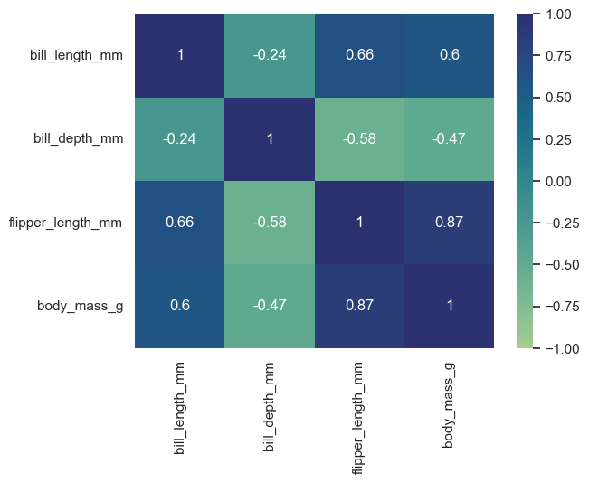
mask = np.triu(np.ones_like(cor_mat, dtype=bool))
np.fill_diagonal(mask, False)
maskarray([[False, True, True, True],
[False, False, True, True],
[False, False, False, True],
[False, False, False, False]])def cor_heatmap(df, font=10, abs=False):
if abs:
df = np.abs(df)
mask = np.triu(np.ones_like(df, dtype=bool))
np.fill_diagonal(mask, False)
cmap = sns.diverging_palette(205, 12, s=100, l=55, as_cmap=True)
ax = sns.heatmap(df, annot=True, cmap=cmap, vmin=-1, vmax=1, mask=mask,
annot_kws={"size": font})
ax.set(xlabel="", ylabel="")
ax.set_xticks(ax.get_xticks(), ax.get_xticklabels(), rotation=45, ha='right')
cor_heatmap(cor_mat)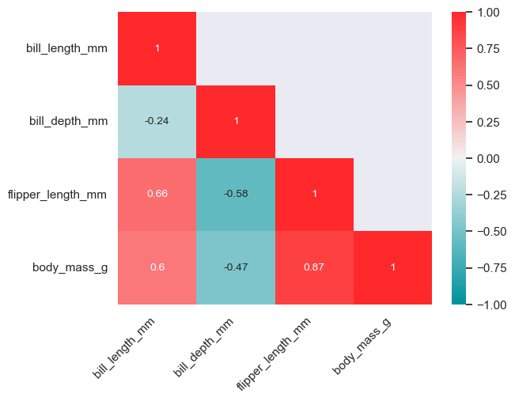
mtcars = sm.datasets.get_rdataset("mtcars").dataimport matplotlib.pyplot as plt
plt.figure(figsize=(8, 6))
cor_heatmap(mtcars.corr(), 9, abs=True)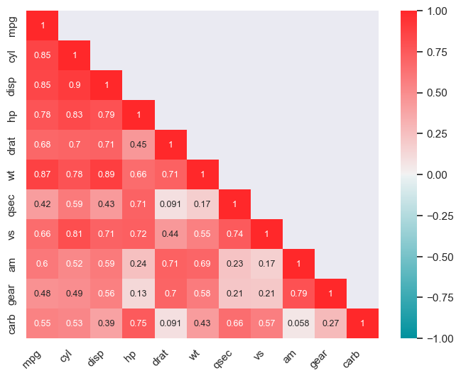
from vega_datasets import data
gapminder = data.gapminder()
gap = gapminder[["country", "year", "life_expect", "cluster"]]gap.iloc[:,:-1].set_index(["country", "year"]).unstack().head()| life_expect | |||||||||||
|---|---|---|---|---|---|---|---|---|---|---|---|
| year | 1955 | 1960 | 1965 | 1970 | 1975 | 1980 | 1985 | 1990 | 1995 | 2000 | 2005 |
| country | |||||||||||
| Afghanistan | 30.332 | 31.997 | 34.020 | 36.088 | 38.438 | 39.854 | 40.822 | 41.674 | 41.763 | 42.129 | 43.828 |
| Argentina | 64.399 | 65.142 | 65.634 | 67.065 | 68.481 | 69.942 | 70.774 | 71.868 | 73.275 | 74.340 | 75.320 |
| Aruba | 64.381 | 66.606 | 68.336 | 70.941 | 71.830 | 74.116 | 74.494 | 74.108 | 73.011 | 73.451 | 74.239 |
| Australia | 70.330 | 70.930 | 71.100 | 71.930 | 73.490 | 74.740 | 76.320 | 77.560 | 78.830 | 80.370 | 81.235 |
| Austria | 67.480 | 69.540 | 70.140 | 70.630 | 72.170 | 73.180 | 74.940 | 76.040 | 77.510 | 78.980 | 79.829 |
gap_wide = gap.pivot(index=["country"], columns="year", values="life_expect")
gap_wide.head()| year | 1955 | 1960 | 1965 | 1970 | 1975 | 1980 | 1985 | 1990 | 1995 | 2000 | 2005 |
|---|---|---|---|---|---|---|---|---|---|---|---|
| country | |||||||||||
| Afghanistan | 30.332 | 31.997 | 34.020 | 36.088 | 38.438 | 39.854 | 40.822 | 41.674 | 41.763 | 42.129 | 43.828 |
| Argentina | 64.399 | 65.142 | 65.634 | 67.065 | 68.481 | 69.942 | 70.774 | 71.868 | 73.275 | 74.340 | 75.320 |
| Aruba | 64.381 | 66.606 | 68.336 | 70.941 | 71.830 | 74.116 | 74.494 | 74.108 | 73.011 | 73.451 | 74.239 |
| Australia | 70.330 | 70.930 | 71.100 | 71.930 | 73.490 | 74.740 | 76.320 | 77.560 | 78.830 | 80.370 | 81.235 |
| Austria | 67.480 | 69.540 | 70.140 | 70.630 | 72.170 | 73.180 | 74.940 | 76.040 | 77.510 | 78.980 | 79.829 |
sns.clustermap(gap_wide, col_cluster=False, cmap="crest", cbar_pos=(1, 0.1, .02, .5))<seaborn.matrix.ClusterGrid at 0x117f97850>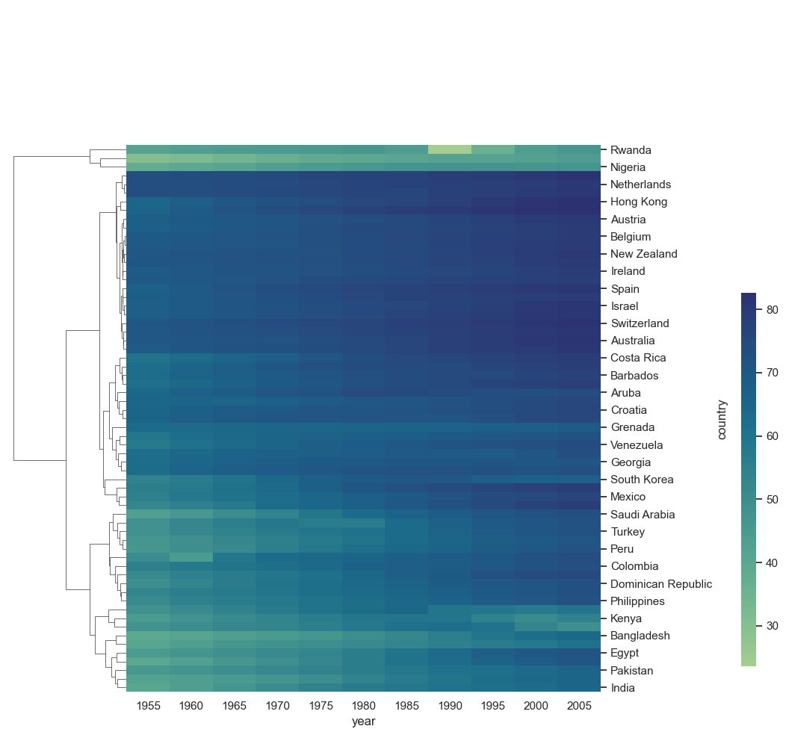
R for Data Science
(
so.Plot(mpg, x="displ", y="hwy", color="class")
.add(so.Dot(alpha=.2))
)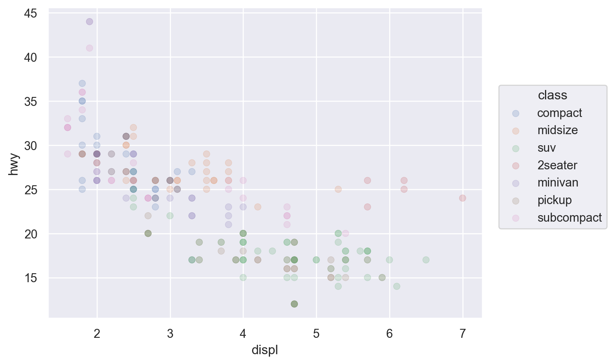
mpg.head()| manufacturer | model | displ | year | cyl | trans | drv | cty | hwy | fl | class | |
|---|---|---|---|---|---|---|---|---|---|---|---|
| 0 | audi | a4 | 1.8 | 1999 | 4 | auto(l5) | f | 18 | 29 | p | compact |
| 1 | audi | a4 | 1.8 | 1999 | 4 | manual(m5) | f | 21 | 29 | p | compact |
| 2 | audi | a4 | 2.0 | 2008 | 4 | manual(m6) | f | 20 | 31 | p | compact |
| 3 | audi | a4 | 2.0 | 2008 | 4 | auto(av) | f | 21 | 30 | p | compact |
| 4 | audi | a4 | 2.8 | 1999 | 6 | auto(l5) | f | 16 | 26 | p | compact |
(
so.Plot(mpg, x="displ", y="hwy", pointsize="class")
.add(so.Dots(alpha=.5, fill=True))
.scale(pointsize=(1, 20))
)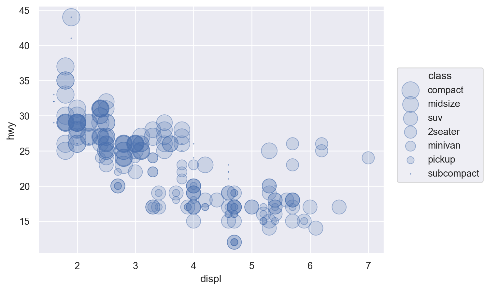
(
so.Plot(mpg, x="displ", y="hwy", alpha="class")
.add(so.Dot(pointsize=10))
)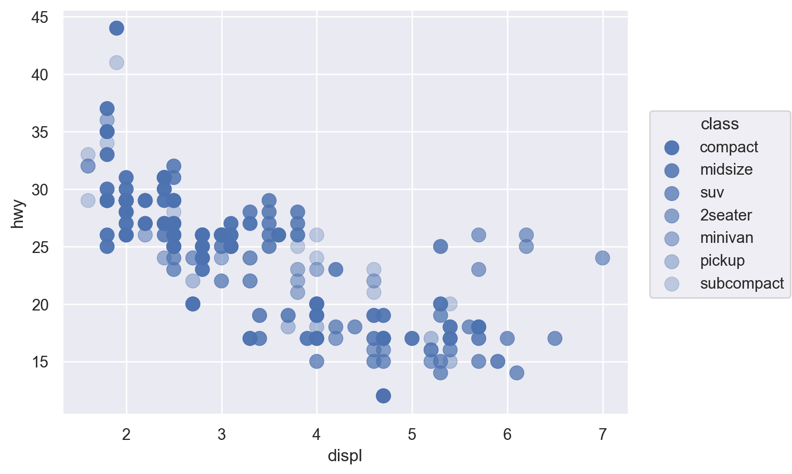
(
so.Plot(mpg, x="displ", y="hwy", marker="class")
.add(so.Dots(pointsize=10))
)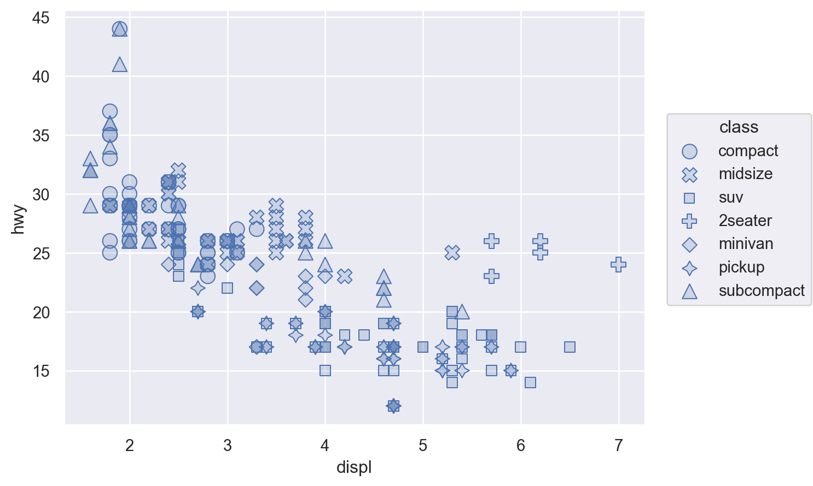
(
so.Plot(mpg, x="displ", y="hwy", stroke="class")
.add(so.Dots())
)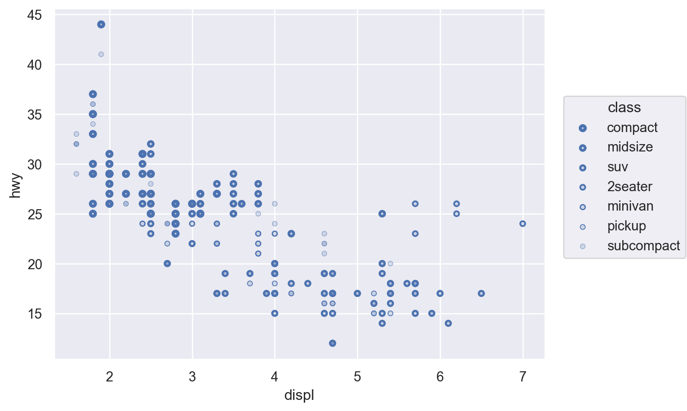
(
so.Plot(mpg, x="displ", y="hwy")
.add(so.Dot(color="blue"))
)
(
so.Plot(mpg, x="displ", y="hwy")
.add(so.Dots(stroke=2, pointsize=10, fill=False))
)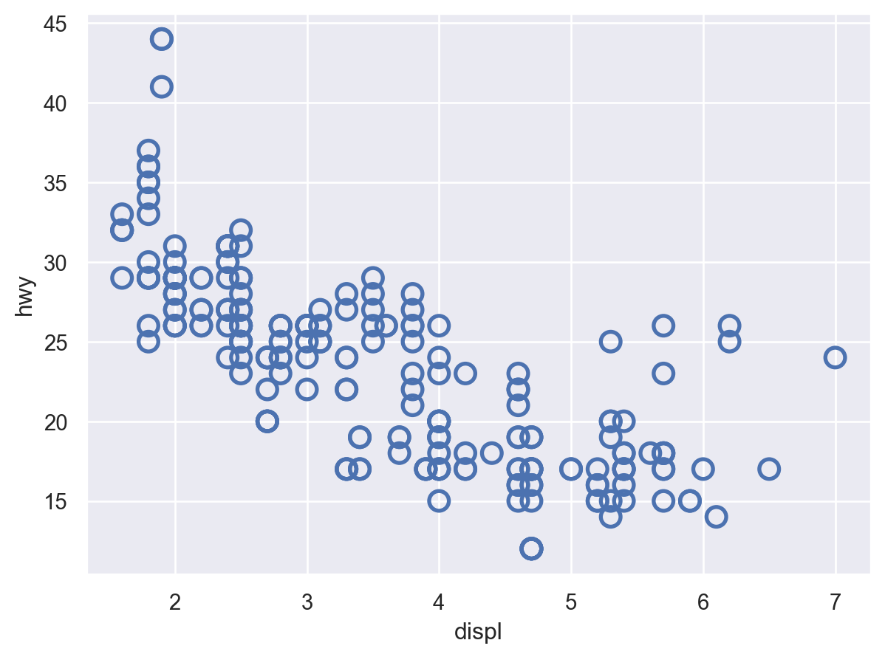
(
so.Plot(mpg, x="displ", y="hwy")
.add(so.Dot())
.facet("class", wrap=4) # default: col
)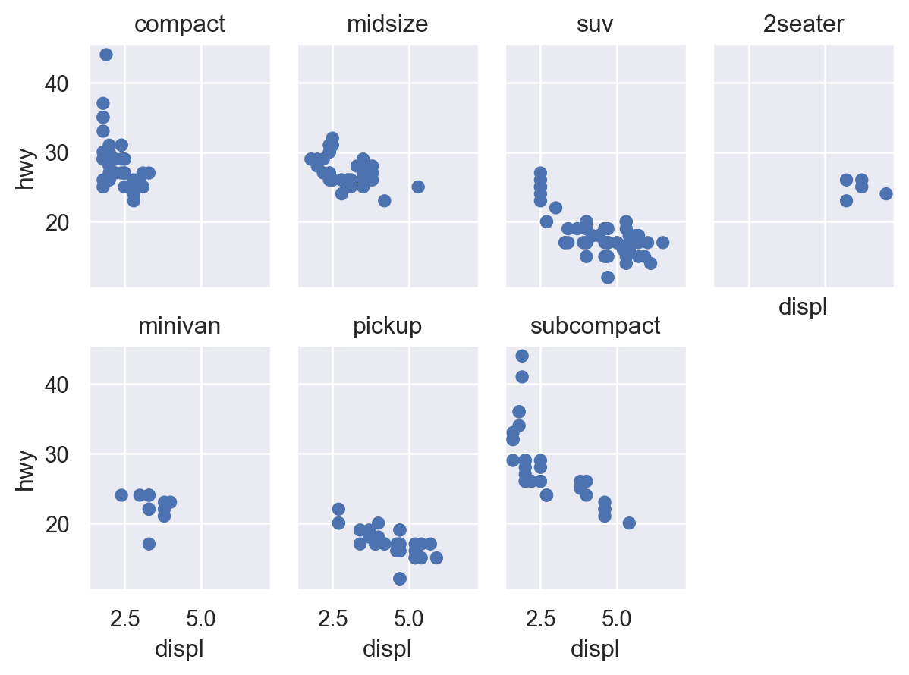
(
so.Plot(mpg, x="displ", y="hwy")
.add(so.Dot())
.facet(row="class", wrap=3)
)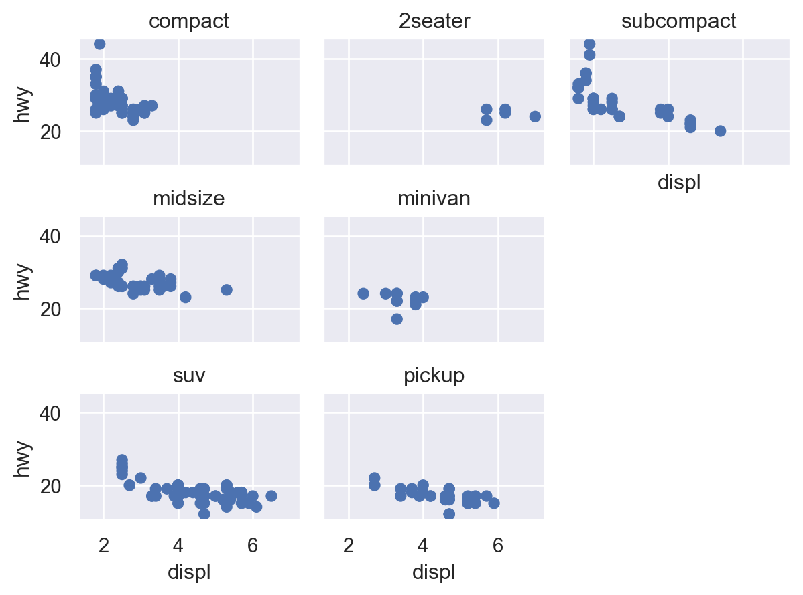
(
so.Plot(tips, x="total_bill", y="tip", pointsize="size", color="size")
.add(so.Dot(edgecolor="white"))
.scale(pointsize=(3, 20))
)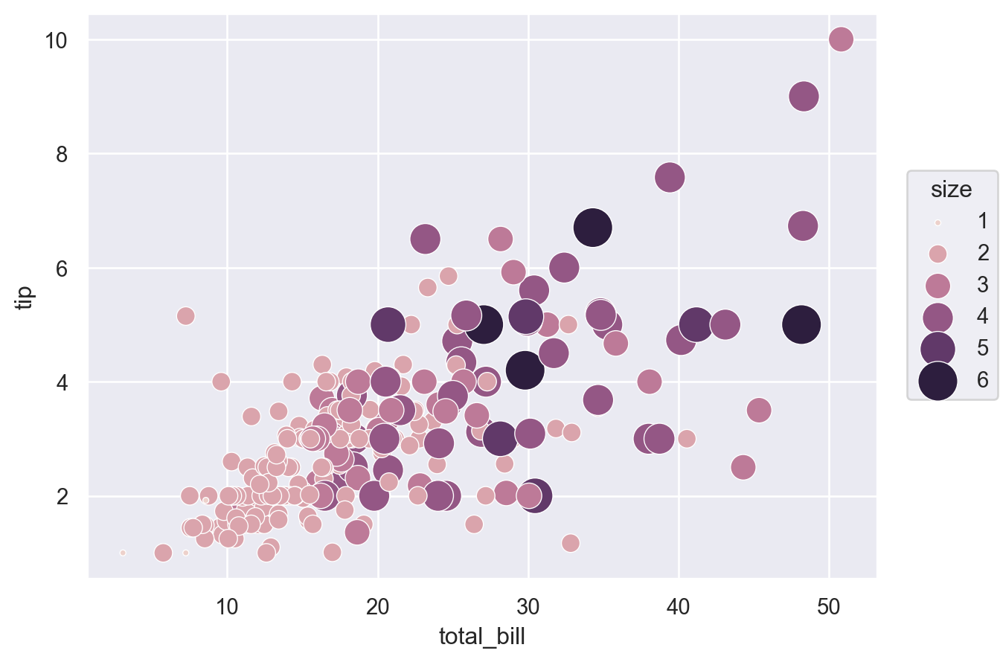
# parsing function
def make_datetime_100(data, time):
date_data = (data[['year', 'month', 'day', time]].
assign(
hour = lambda x: x[time] // 100,
minute = lambda x: x[time] % 100).
filter(['year', 'month', 'day', 'hour', 'minute'])
)
out = pd.to_datetime(date_data)
return out
# data table
flights_dt = (flights.
query('(dep_time.notna()) & (arr_time.notna())').
assign(
dep_time = lambda x: make_datetime_100(x, 'dep_time'),
arr_time = lambda x: make_datetime_100(x, 'arr_time'),
sched_dep_time = lambda x: make_datetime_100(x, 'sched_dep_time'),
sched_arr_time = lambda x: make_datetime_100(x, 'sched_arr_time')
).
filter( regex = 'origin|dest|delay$|time$')
)flights_dt.head()| dep_time | sched_dep_time | dep_delay | arr_time | sched_arr_time | arr_delay | origin | dest | air_time | |
|---|---|---|---|---|---|---|---|---|---|
| 0 | 2013-01-01 05:17:00 | 2013-01-01 05:15:00 | 2.0 | 2013-01-01 08:30:00 | 2013-01-01 08:19:00 | 11.0 | EWR | IAH | 227.0 |
| 1 | 2013-01-01 05:33:00 | 2013-01-01 05:29:00 | 4.0 | 2013-01-01 08:50:00 | 2013-01-01 08:30:00 | 20.0 | LGA | IAH | 227.0 |
| 2 | 2013-01-01 05:42:00 | 2013-01-01 05:40:00 | 2.0 | 2013-01-01 09:23:00 | 2013-01-01 08:50:00 | 33.0 | JFK | MIA | 160.0 |
| 3 | 2013-01-01 05:44:00 | 2013-01-01 05:45:00 | -1.0 | 2013-01-01 10:04:00 | 2013-01-01 10:22:00 | -18.0 | JFK | BQN | 183.0 |
| 4 | 2013-01-01 05:54:00 | 2013-01-01 06:00:00 | -6.0 | 2013-01-01 08:12:00 | 2013-01-01 08:37:00 | -25.0 | LGA | ATL | 116.0 |
plot_dat = (flights_dt.assign(
minute = lambda x: x.dep_time.dt.minute).
groupby('minute').
agg(
avg_delay = ('arr_delay', np.mean),
n = ('arr_delay', 'size')
).reset_index()
)
so.Plot(plot_dat, x="minute", y="avg_delay").add(so.Line(marker="o", edgecolor="red", linewidth=2), linestyle=None)
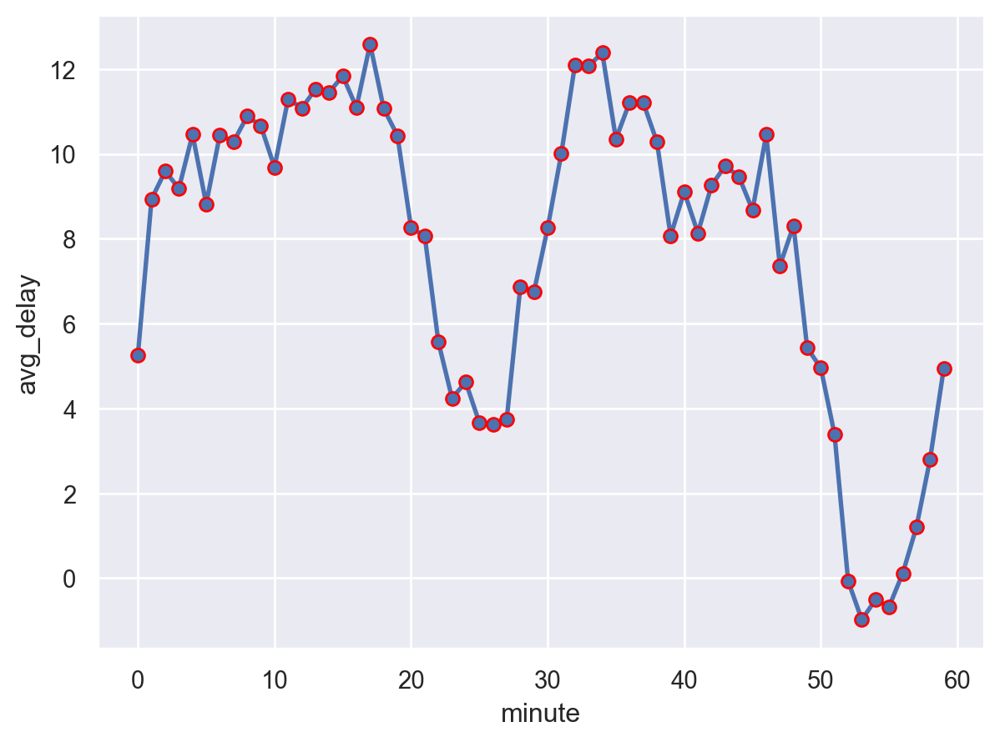
(
px.scatter(mpg, x="displ", y="hwy", color="drv",
trendline="lowess", trendline_options=dict(frac=.5))
.update_layout(width=600, height=400)
)Unable to display output for mime type(s): application/vnd.plotly.v1+json(
px.scatter(mpg, x="displ", y="hwy",
trendline="lowess", trendline_options=dict(frac=.5))
.update_layout(width=600, height=400)
)Unable to display output for mime type(s): application/vnd.plotly.v1+json(
so.Plot(mpg, x="displ", y="hwy", color="drv")
.add(so.Dot())
.add(so.Line(linewidth=2), so.PolyFit(5))
)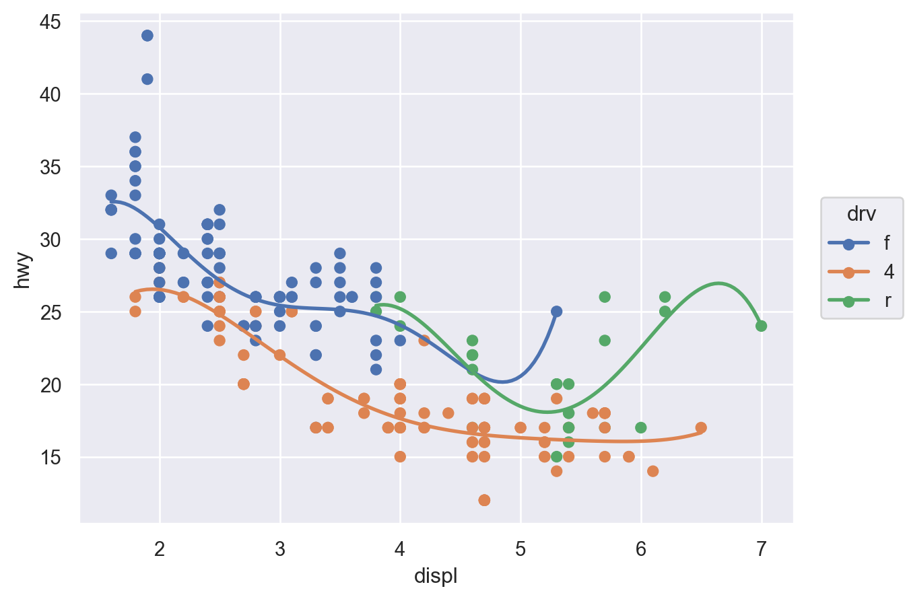
(
so.Plot(mpg, x="displ", y="hwy", color="drv")
.add(so.Dot())
.add(so.Band(alpha=.7), so.Est())
)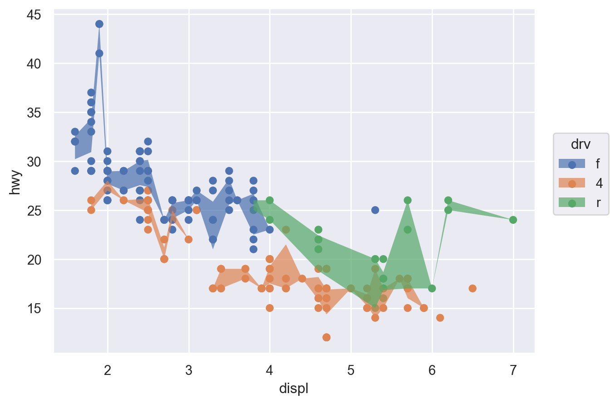
(
so.Plot(mpg, x="displ", y="hwy", linestyle="drv")
.add(so.Line(linewidth=2), so.PolyFit(5))
)(
so.Plot(mpg, x="displ", y="hwy", linestyle="drv", color="drv")
.add(so.Line(linewidth=2), so.PolyFit(5))
)mpg_subcpt = mpg[mpg["class"] == "subcompact"]
(
so.Plot(mpg, x="displ", y="hwy")
.add(so.Dot(), color="class")
.add(so.Line(linewidth=2), so.PolyFit(5),
x=mpg_subcpt.displ,
y=mpg_subcpt.hwy)
.scale(color="Set2")
)mpg.head()| manufacturer | model | displ | year | cyl | trans | drv | cty | hwy | fl | class | |
|---|---|---|---|---|---|---|---|---|---|---|---|
| 0 | audi | a4 | 1.8 | 1999 | 4 | auto(l5) | f | 18 | 29 | p | compact |
| 1 | audi | a4 | 1.8 | 1999 | 4 | manual(m5) | f | 21 | 29 | p | compact |
| 2 | audi | a4 | 2.0 | 2008 | 4 | manual(m6) | f | 20 | 31 | p | compact |
| 3 | audi | a4 | 2.0 | 2008 | 4 | auto(av) | f | 21 | 30 | p | compact |
| 4 | audi | a4 | 2.8 | 1999 | 6 | auto(l5) | f | 16 | 26 | p | compact |
(
so.Plot(mpg, x="displ", y="hwy", color="drv")
.add(so.Dot(pointsize=10, edgecolor="white", edgewidth=3))
)smaller = diamonds.query('carat < 3')
(
so.Plot(smaller, x="carat", color="cut")
.add(so.Line(marker="."), so.Hist(binwidth=.1))
)(
so.Plot(smaller, x="carat", color="cut")
.add(so.Line(marker="."), so.Hist(stat="probability", binwidth=.1, common_norm=["color"]))
)cl = mpg.groupby("class")["hwy"].median().sort_values().index.values
px.box(mpg, x="class", y="hwy", category_orders={"class": cl})Unable to display output for mime type(s): application/vnd.plotly.v1+jsoncl = mpg.groupby("class")["hwy"].median().sort_values().index.values
px.box(mpg, y="class", x="hwy", category_orders={"class": cl})Unable to display output for mime type(s): application/vnd.plotly.v1+jsoncl = mpg.groupby("class")["hwy"].median().sort_values().index.values
(
so.Plot(mpg, x="class", y="hwy")
.add(so.Dot(pointsize=10), so.Agg("median"))
.scale(x=so.Nominal(order=cl))
)(
so.Plot(mpg, x="class", y="hwy")
#.add(so.Dot(alpha=.3, pointsize=5), so.Jitter(width=.5))
.add(so.Dots(pointsize=5, color="dodgerblue"), so.Jitter(width=.5))
.add(so.Range(color="orangered"), so.Est(errorbar="sd"))
.add(so.Dot(pointsize=8, color="orangered"), so.Agg())
.add(so.Line(color="orangered"), so.Agg())
.scale(x=so.Nominal(order=cl))
)sns.boxplot(mpg, x="class", y="hwy")<AxesSubplot: xlabel='class', ylabel='hwy'>mpg.groupby("class").boxplot(column="hwy", subplots=False)<AxesSubplot: >sns.histplot(diamonds, x="color", y="cut", cbar=True)<AxesSubplot: xlabel='color', ylabel='cut'>sns.jointplot(diamonds, x="color", y="cut", cbar=True, kind="hist")<seaborn.axisgrid.JointGrid at 0x28531a910>dia_sum = diamonds.groupby(["color", "cut"]).size().reset_index(name="count")
(
so.Plot(dia_sum, x="cut", y="color", pointsize="count")
.add(so.Dot())
.scale(pointsize=(5, 20))
)dia_sum = diamonds.groupby(["color", "cut"]).size().reset_index(name="count")
(
so.Plot(dia_sum, x="color", y="cut", color="count")
.add(so.Dot(pointsize=30))
.scale(color=("deepskyblue", "blue"))
)(
so.Plot(diamonds, x="carat", y="price")
.add(so.Dot(alpha=.01))
)smaller = (
diamonds
.query('carat < 3')
.assign(
carat_cat=lambda x:pd.cut(x.carat, 30, labels=False)
)
)
(
px.box(smaller, x="carat_cat", y="price",
title="price vs. carat",
labels={"carat_cat": "carat discretized"})
)Unable to display output for mime type(s): application/vnd.plotly.v1+json(
px.box(smaller, x="carat_cat", y="price")
.update_layout(
title_text="price vs. carat",
xaxis_title="Carat",
yaxis_title="Price")
)Unable to display output for mime type(s): application/vnd.plotly.v1+jsonsmaller = (
diamonds
.query('carat < 3')
.assign(
carat_cat2=lambda x:pd.qcut(x.carat, 25, labels=False)
)
)
px.box(smaller, x="carat_cat2", y="price")Unable to display output for mime type(s): application/vnd.plotly.v1+jsonsns.boxplot(smaller, x="carat_cat2", y="price")<AxesSubplot: xlabel='carat_cat2', ylabel='price'>smaller.head()| carat | cut | color | clarity | depth | table | price | x | y | z | carat_cat2 | |
|---|---|---|---|---|---|---|---|---|---|---|---|
| 0 | 0.23 | Ideal | E | SI2 | 61.5 | 55.0 | 326 | 3.95 | 3.98 | 2.43 | 0 |
| 1 | 0.21 | Premium | E | SI1 | 59.8 | 61.0 | 326 | 3.89 | 3.84 | 2.31 | 0 |
| 2 | 0.23 | Good | E | VS1 | 56.9 | 65.0 | 327 | 4.05 | 4.07 | 2.31 | 0 |
| 3 | 0.29 | Premium | I | VS2 | 62.4 | 58.0 | 334 | 4.20 | 4.23 | 2.63 | 0 |
| 4 | 0.31 | Good | J | SI2 | 63.3 | 58.0 | 335 | 4.34 | 4.35 | 2.75 | 1 |
(
so.Plot(smaller, x="carat_cat", y="price")
.add(so.Dot(alpha=.01, color="deepskyblue"))
.add(so.Range(color="orangered"), so.Est(errorbar="sd"))
.add(so.Dot(pointsize=8, color="orangered"), so.Agg())
.add(so.Line(color="orangered"), so.Agg())
.add(so.Line(color="blue"), so.PolyFit(3))
)
# colors: https://matplotlib.org/3.1.0/gallery/color/named_colors.htmlsns.jointplot(diamonds, x="carat", y="price", kind="hex")<seaborn.axisgrid.JointGrid at 0x1544d1090>px.density_heatmap(diamonds, x="carat", y="price",
nbinsx=20, nbinsy=20, color_continuous_scale="Viridis")Unable to display output for mime type(s): application/vnd.plotly.v1+json